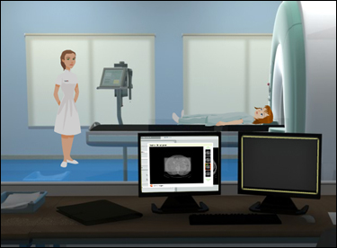

 |
|
Consta de un imán en forma de anillo de intensidad variable. En función de la potencia del sistema en unidades Tesla (T) se clasifican en imanes de campo magnético bajo a alto, con valores por debajo de los 0.5 T hasta superiores a 1.5 T. Los más modernos son equipos superconductores con una cubierta de helio como aislante y que tiene una función de refrigeración.
El equipo de magnetización ideal debe procurar un campo magnético homogéneo y disponen de elementos para controlar la dispersión del mismo.
El campo magnético que se genera debe centrarse en un área concreta anatómica que se desea estudiar. Para poder concentrar las señales en esa área concreta se emplea una distorsión controlada del campo denominada gradiente. |